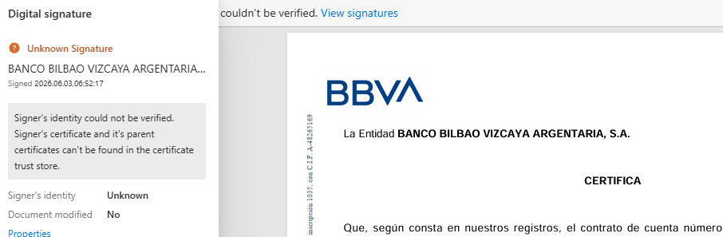

Документы
Банковская выписка
Вопросы по подаче можно задать в Telegram: t.me/ola_espana.
Применимо для подачи на ВНЖ цифрового кочевника в Испании: и для работы в найме, и для работы по контракту.
Требования к выписке
Подготовьте выписку за три месяца перед подачей. Поступления должны соответствовать инвойсам или зарплатным листам.
Банковская выписка должна быть заверена подписью или печатью банка на бумаге, квалифицированной электронной подписью или электронной печатью по правилам ЕС либо нотариально.
Бумажная выписка. Закажите выписку с собственноручной подписью сотрудника банка или мокрой печатью. Рекомендуем получить и подпись, и печать: в отдельных дозапросах UGE требует оба реквизита. Для подачи отсканируйте документ. Напечатанное изображение печати не является мокрой печатью.
Электронная выписка с подписью. Подходит выписка, заверенная квалифицированной электронной подписью или печатью банка по правилам ЕС. Подписанный PDF подавайте без изменений. Нужные строки выделяйте в отдельной копии.

Пример выписки с электронной подписью. Проверке мешает отсутствие доверенного сертификата.
Электронная выписка. Выписку из онлайн-банка без квалифицированной электронной подписи или печати по правилам ЕС заверьте у испанского нотариуса. Порядок действий описан ниже в разделе «Нотариальное заверение выписки».
Выделите поступления от работодателя или клиентов.
Банковскую выписку не нужно переводить через jurado. Достаточно простого перевода на испанский.
Ранее одобряли и выписки без заверения. Подавать так - на свой риск: UGE может потребовать заверенную выписку.
T-Банк, Payoneer, Deel
T-Банк
Т-Банк позволяет заказать справку с движением средств за три месяца. Банк отдельно предупреждает: бумажная справка по стандартному заказу содержит напечатанную факсимильную печать; документ с мокрой печатью нужно запросить в поддержке. Инструкция Т-Банка.
В запросе на бумажный документ укажите оба реквизита: мокрая печать и собственноручная подпись сотрудника. Возможность заказать справку с мокрой печатью подтверждена банком; наличие на ней собственноручной подписи нужно согласовать отдельно.
Payoneer, Deel и другие платформы
При получении оплаты через платформу:
- Скачайте из личного кабинета выписку или отчет о поступлениях за три месяца перед подачей.
- Приложите инвойсы, зарплатные листы или подтверждения выплат, связывающие поступления с клиентом или работодателем из контракта.
- Если деньги переводились с платформы на банковский счет, приложите банковскую выписку с этими поступлениями.
Если в банковской выписке отправителем указана платформа, в сопроводительном письме поясните, от какого клиента или работодателя получены деньги, и сошлитесь на подтверждающий документ из платформы. Разницу в суммах из-за комиссии или конвертации также поясните.
Для электронной выписки платформы без заверения оформите нотариальный акт у испанского нотариуса. Он фиксирует вход в аккаунт и получение выписки из него. Порядок действий описан ниже в разделе «Нотариальное заверение выписки».
Нотариальное заверение выписки
На личном приеме попросите оформить нотариальный акт об удостоверении фактов (acta notarial de presencia).
Испанский нотариус не заверяет “правильность” банковских данных. Он фиксирует, что заявитель вошел в онлайн-банк или платежный сервис, показал аккаунт и скачал выписку.
Что должно попасть в акт:
- заявитель вошел в онлайн-банк или платежный сервис;
- аккаунт принадлежит заявителю;
- заявитель скачал выписку за нужный период;
- в выписке видны платежи от работодателя или клиентов;
- распечатка выписки или скриншоты приложены к акту.
Что сказать нотариусу на приеме:
Мне нужно подтвердить выписку из онлайн-банка или платежного сервиса для подачи на ВНЖ в Испании. Я войду в свой аккаунт и скачаю выписку в вашем присутствии. Прошу зафиксировать в нотариальном акте, что аккаунт принадлежит мне и выписка получена из него, и приложить выписку к акту.
При записи назовите банк или платформу и язык интерфейса. Если интерфейс не на испанском, уточните, нужен ли переводчик на приеме.
Если акт делает испанский нотариус для подачи в Испании, апостиль на такой акт не нужен.
Юридическая сила электронной подписи и печати.